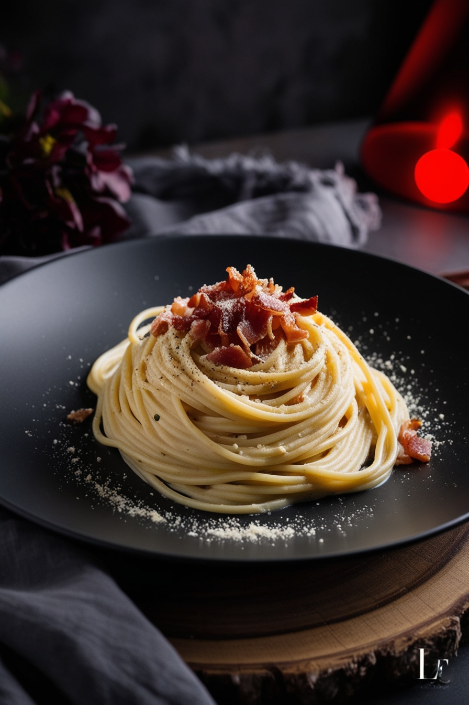
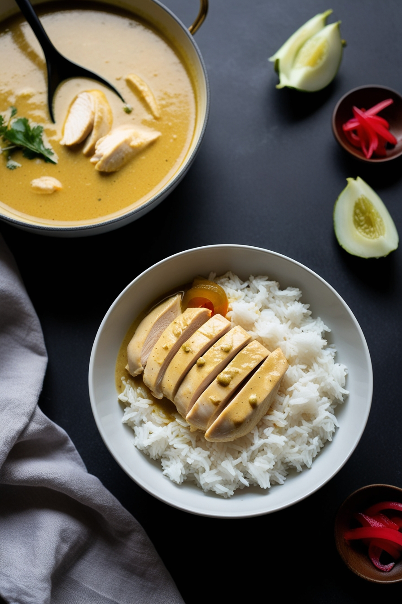
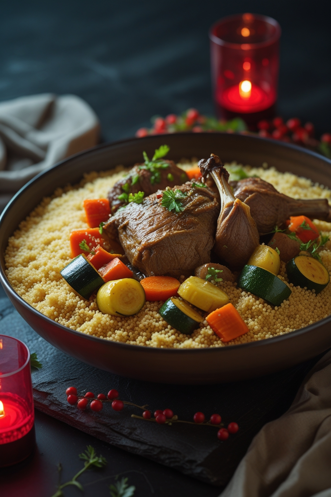
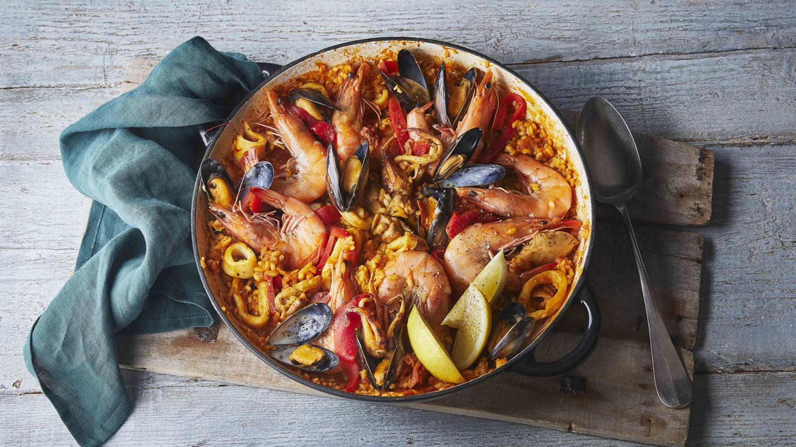
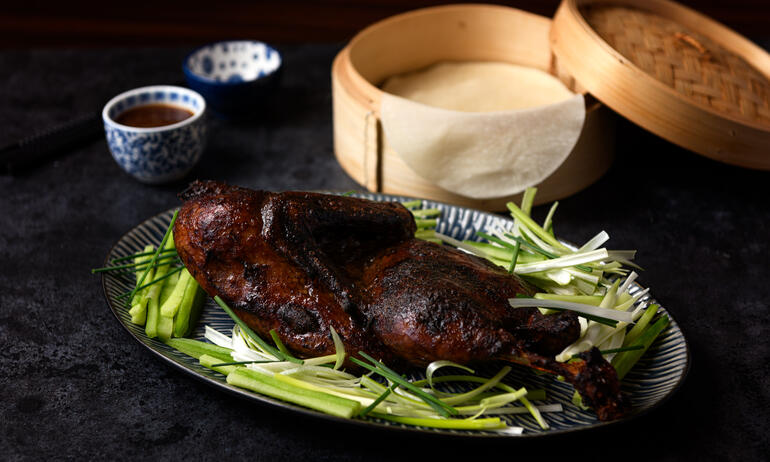
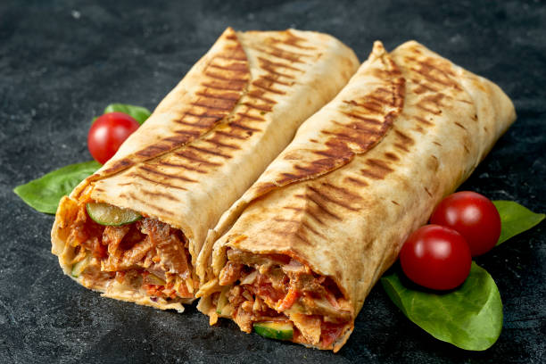
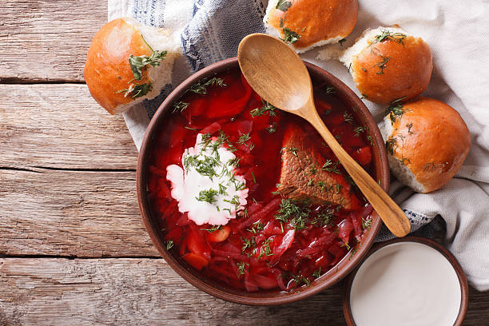
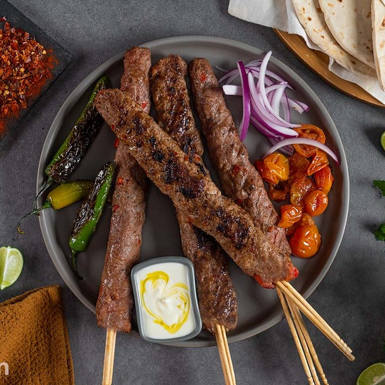

Spaghetti Carbonara
Origin: Italy
Components: Pasta, eggs, pancetta, Parmesan cheese, black pepper
Rating:
How to Do It: Watch the tutorial
Chicken Curry
Origin: India
Components: Chicken breast, curry powder, coconut milk, garlic, ginger, rice
Rating:
How to Do It: Watch the tutorial
Traditional Couscous
Origin: North Africa
Components: Couscous, vegetables, chickpeas, lamb, spices
Rating:
How to Do It: Watch the tutorial
Sushi
Origin: Japan
Components: Sushi rice, raw fish (tuna, salmon), seaweed, wasabi, soy sauce
Rating:
How to Do It: Watch the tutorial

Paella
Origin: Spain
Components: Rice, seafood (shrimp, mussels), chicken, saffron, peas, bell peppers
Rating:
How to Do It: Watch the tutorial
Peking Duck
Origin: China
Components: Duck, hoisin sauce, pancakes, cucumber, spring onions
Rating:
How to Do It: Watch the tutorial
Tom Yum Goong
Origin: Thailand
Components: Shrimp, lemongrass, kaffir lime leaves, galangal, chili, fish sauce, lime juice
Rating:
How to Do It: Watch the tutorial

Ramen
Origin: Japan
Components: Noodles, broth, soy sauce, egg, pork, seaweed
Rating:
How to Do It: Watch the tutorial
Pizza Margherita
Origin: Italy
Components: Pizza dough, tomato sauce, mozzarella, basil, olive oil
Rating:
How to Do It: Watch the tutorial

Classic Hamburger
Origin: USA
Components: Ground beef, buns, lettuce, tomato, cheese, pickles
Rating:
How to Do It: Watch the tutorial

Shawarma
Origin: Middle East
Components: Beef or chicken, pita bread, garlic sauce, pickles, tomatoes
Rating:
How to Do It: Watch the tutorial
Borscht
Origin: Russia
Components: Beets, cabbage, potatoes, carrots, onions, garlic, sour cream
Rating:
How to Do It: Watch the tutorial
Köfte
Origin: Turkey
Components: Ground beef or lamb, onions, parsley, garlic, spices
Rating:
How to Do It: Watch the tutorial
Fish and Chips
Origin: England
Components: White fish fillets, potatoes, flour, oil, vinegar, mushy peas
Rating:
How to Do It: Watch the tutorial

Beef Tacos
Origin: Mexico
Components: Ground beef, taco shells, lettuce, cheese, salsa, sour cream
Rating:
How to Do It: Watch the tutorial